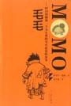

毛毛——时间窃贼和一个小女孩的不可思议的故事
作者：米切尔·恩德[德]

有一天，平地里冒出来一个自称叫毛毛的小女孩。
没人知道她从哪里来、几岁，有点像那首名叫《橄榄树》的歌中低声吟唱的那样：
不要问我从哪里来，我的故乡在远方……
她瘦瘦的，蓬头垢面，只是一双黑眼睛又大又深送，宛如寒星……
米切尔·恩德带着《毛毛》朝我们走来。
第01章 一座大城市和一个小姑娘
第02章 一种不平常的优点和一支很一般的争吵
第03章 一场假的风暴和一场真的雷雨
第04章 一个沉默的者人和一个善辩的孩子
第05章 为许会人讲的故事和为一个人讲的故事
第06章 打算虽然错误，但却如愿以偿
第07章 毛毛寻找她的朋友，一个敌人来找毛毛
第08章 一串梦想和几个疑虑
第09章 一次没有召开的好集会，以及召开的坏集舍
第10章 一发疯狂的追捕和一次从容的逃遁
第11章 假如恶魔能把坏事变成最好的事……
第12章 毛毛走向肘间的发源地
第13章 那里方一日，这里已一年
第14章 可吃的东西太苦回答的却不少
第15章 得而复失
第16章 富裕中的贫困
第17章 非常的恐惧和超凡的勇气
第18章 瞻前不顾后
第19章 被围困者必须当机立断
第20章 跟踪追踪者
第21章 终结就是新的开始
作者简短附记
毛毛：人类的守护天使
译后记